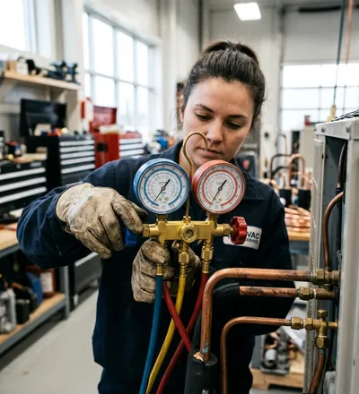

Política de Privacidade
Transparência sobre a coleta, finalidade e proteção das informações enviadas em nosso formulário de orçamento.

Tratamento de informações de orçamento
Esta Política de Privacidade esclarece como as informações fornecidas voluntariamente pelos usuários nos formulários do site Técnico de Refrigeração em Santa Luzia MG são utilizadas.
Dados coletados
Quando você solicita um orçamento pelo formulário, coletamos apenas os dados necessários para identificar o equipamento e retornar o contato: nome, telefone, bairro de atendimento, tipo de equipamento, serviço desejado e descrição do problema, além da página de origem da solicitação e data/hora do envio.
Finalidade do uso
Os dados são utilizados exclusivamente para análise técnica preliminar, elaboração de orçamento e retorno de atendimento comercial ou residencial solicitado pelo próprio usuário. Não vendemos, alugamos nem compartilhamos suas informações pessoais com terceiros para fins publicitários.
Contato via WhatsApp
Ao optar por clicar nos botões de WhatsApp, a conversa ocorre diretamente no aplicativo de mensagens, seguindo também os termos de serviço da respectiva plataforma.
Exclusão e atualização de dados
O titular dos dados pode solicitar a qualquer momento a confirmação, correção ou exclusão de seus registros de orçamento entrando em contato pelos canais oficiais disponíveis na página de contato.
Solicitar orçamento técnico
Preencha os dados do equipamento e do bairro em Santa Luzia ou fale diretamente pelo WhatsApp.